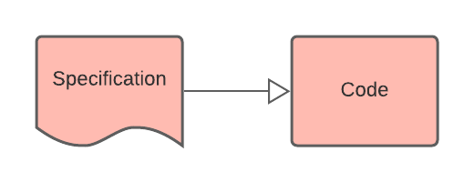

Sam Nolan
23 April 2021
Failing to implement software to specification
Formal methods > Interactive Theorem Provers (ITPs)
Proving software is extremely hard
IronFleet project: 5000 lines of verified Dafny code, in 3.7 person-years. 4 lines of code a day!
Empirical Studies [2,5]
| Problem | Isabelle | KeY | HOL | Coq | Lean | Others |
|---|---|---|---|---|---|---|
| Too much detail shown | ? | [1] | ? | ? | ? | ? |
| Hard to understand failure | ? | [2] | ? | ? | ? | ? |
| Understanding proof state | [1] | [1] | ? | ? | ? | ? |
| False Prediction made | [3] | ? | [3] | ? | ? | ? |
| Tedious Interaction | ? | [1] | ? | ? | ? | ? |
| Lack of proof refactoring | [1] | ? | ? | ? | ? | ? |
Legend: Suggested Focus Group Empirical
| Solution | Isabelle | KeY | HOL | Coq | Lean | Others |
|---|---|---|---|---|---|---|
| Improve understanding of intermediate proof state | ? | [2] | ? | ? | ? | ? |
| Secondary Notation | ? | ? | [3] | ? | ? | ? |
| Symbolic debugging interface | ? | [2] | ? | ? | ? | ? |
| Show different views of interface | [4] | [4] | [4] | [4] | [4] | [4] |
| Allow different interaction styles | [4] | [4] | [4] | [4] | [4] | [4] |
Legend: Suggested Focus Group Empirical
Systematic Analysis of Usability problems and solutions for ITPs
SLR + Personal Investigation
Working software for everyone😁